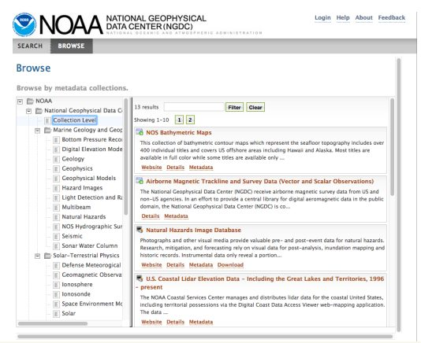
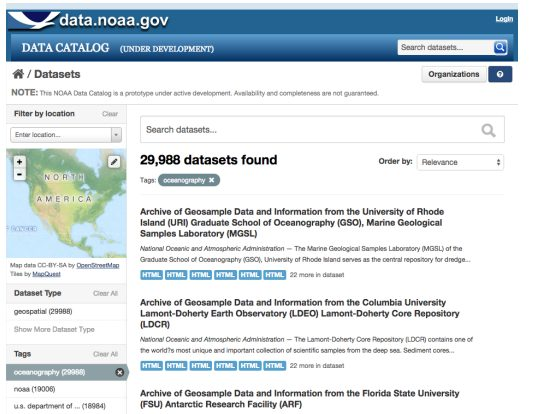

دسترسی به دادههای هواشناسی از طریق اداره ملی اقیانوسی و جوی ایالاتمتحده (NOAA) بهطور قابلتوجهی هزینههای اقتصادی و انسانی آسیبهای مربوط به آبوهوا را از طریق پیشبینیهای دقیقتر؛ توسعه صنعت مالی چند میلیارد دلاری مشتقات هواشناسی؛ و رشد صنعت یکمیلیون دلاری ابزار و برنامههای که از دادههای بیدرنگ NOAA بهدستآمده است؛ کاهش داده است. از بسیاری جهات، صنعت ساختهشده حول دادههای آبوهوای NOAA بهعنوان نمونهای از چگونگی انتشار دادههای باز میتواند تأثیرات اقتصادی عمدهای داشته باشد. برای سنجش بیشتر تأثیر داده، NOAA پروژه کلان داده (BDP) را راهاندازی کرده است، که فرصتی برای ترکیب حجم عظیم داده محیطی با کیفیت بالا و محصولات داده پیشرفته، زیرساخت و ظرفیت فنی گسترده صنعت خصوصی، و نوآوری و انرژی اقتصاد آمریکا فراهم میکند.
- تأثیرات مجموعه دادهی باز ارائهشده میتواند مجموعهای باورنکردنی از بخشها و کاربران را در برگیرد
- با دادههای بیدرنگ NOAA که هم میتواند به فرد کمک کند تا تصمیم بگیرد که در سفر خود چتر بیاورد یا نه و هم میتواند به کشاورز کمک کند تا برای محصول این فصل آماده شود، تنها اگر بخواهیم دو مورد را نام ببریم.
- NOAA روزانه بیش از ۳.۵ میلیارد مشاهدات آبوهوا را جمعآوری میکند. حدود ۹۶ درصد از مردم ایالاتمتحده هرسال ۳۰۱ میلیارد پیشبینی دریافت میکنند که ۳۱.۵ میلیارد دلار سود دارد که بسیار بیشتر از ۵.۱ میلیارد دلاری است که سالانه توسط ادارات هواشناسی خصوصی و دولتی برای ایجاد پیشبینی هزینه میشود.
-این مزایای برآورد شده به دلیل استفاده NOAA از انواع تخمینهای کمی از ارزش محصولات و خدمات خود با استفاده از روشهای ارزش اطلاعات (VOI) در دسترس است. این تمرکز بر ارزیابی اثرات اطلاعات بر تصمیمات و تأثیر آن تصمیمات بر نتایج دنیای واقعی، NOAA را از بسیاری دیگر از اقدامات داده باز از نظر اثرات کمی جدا میکند.
-همکاری بین فراهمکنندگان داده دولتی و فعالان صنعت خصوصی میتواند ارزش و فرصتهای جدیدی را از داده باز ایجاد کند.
-ایدههای جمعسپاری برای چگونگی استفاده بهینه از داده باز میتوانند کمک کنند تا اطمینان حاصل شود که مالکان داده مشارکتهای مفیدی ایجاد میکنند و/یا دادهها را به روشهایی منتشر میکنند که بتوانند حداکثر ارزش را بدون نیاز به حداکثر سرمایهگذاری منبع ایجاد کنند.
۱. پیشینه و زمینه
اداره ملی اقیانوسی و جوی (NOAA) از سال ۱۸۰۷ بهعنوان بررسی سواحل و ژئودتیک آغاز به کار کرد. با گذشت زمان، سازمانهای فدرال متعدد علمی و متمرکز بر محیطزیست شکل گرفتند. در سال ۱۹۷۰، پرزیدنت نیکسون ایجاد NOAA را پیشنهاد کرد تا «فعالیتهای زیستمحیطی کشور را یکپارچه کند و رویکردی منطقی و سیستماتیک برای درک، حفاظت، توسعه و بهبود کل محیطزیست ارائه دهد.» امروزه، NOAA تحت اداره بازرگانی ایالاتمتحده قرار دارد و مأموریت بیانشده آن «درک و پیشبینی تغییرات در محیطزیست زمین و حفظ/مدیریت منابع ساحلی و دریایی برای برآوردن نیازهای اقتصادی، اجتماعی و زیستمحیطی کشور» است.
با بودجه سالانه بیش از ۵ میلیارد دلار، NOAA ماهوارههای نظارت بر آبوهوا و ابزارها و سنسورهای پیشرفته را برای جمعآوری مقادیر زیادی از دادههای آبوهوایی و محیطی توسعه میدهد. امروزه، واحدهای عملیاتی آن شامل خدمات آبوهوای ملی (که پیشبینیها را انجام میدهد، و ساعتهای و هشدارهای آبوهوایی شدید را پخش میکند)، خدمات ملی ماهواره و داده محیطی (که ماهوارهها و مرکز دادههای جوی را اداره میکند)، خدمات ملی اقیانوس (که خدمات هیدروگرافی، جغرافیایی و دریایی را انجام میدهد)، خدمات ملی شیلات دریایی (که شیلات تجاری و حفاظت از گونههای دریایی را مدیریت میکند) و دفتر تحقیقات اقیانوسی و جوی (که تحقیقات کاربردی را انجام میدهد) هستند.
دادهها در قلب مأموریت NOAA و در مرکز تمام فعالیتهای آن قرار دارند. از سال ۲۰۱۴، «حدود ۱۰۰ پتابایت داده محیطی در حال حاضر در مراکز داده NOAA ذخیره میشوند» و هرسال ۳۰ پتابایت دیگر اضافه میشود. برای چشمانداز، ۱ پتابایت = ۱ میلیون گیگابایت؛ یا معادل ۲۰ میلیون قفسه بایگانی چهار کشوئی پر از متن، یا ۱۳.۳ سال ویدیوی HD - TV. «کل آثار مکتوب بشر از آغاز تاریخ ثبتشده» حدود ۵۰ پتابایت است. بیش از ۳.۵ میلیارد مشاهده روزانه از بیش از ۹۰ سیستم رصد تحقیقاتی و عملیاتی و همچنین ۱۰۰ سیستم اطلاعاتی واقعی و نزدیک به زمان واقعی، شامل: دادههای ماهوارهای، نظارت منطقهای (بهعنوانمثال، ساحلی، قطبی)، دادههای مدل و آرشیوها، پروفایلهای اقیانوس، اقلیمشناسی و غیره جمعآوری میشوند.
اطلاعات حاصل، زیربنای بخشهای عظیمی از زندگی اقتصادی، اجتماعی و سیاسی در آمریکا (و درواقع، در سراسر جهان) را فراهم میکند. در میان سایر فعالیتها، آنها پیشبینیهای آبوهوایی، پیشبینیهای اقلیمی، ناوبری کشتیها و هواپیماها، و کارهای حفاظتی شامل جمعیتهای دریایی را اطلاعرسانی میکند. بنابراین، دادههای NOAA به هدایت تصمیماتی کمک میکند که هم مهم هستند (برای مثال، چه مقدار برق برای تولید در یک آخر هفته مشخص نیاز است) و هم جزئی هستند (برای مثال، آیا باید این آخر هفته برای بیرون از منزل برنامهریزی کنم؟).
همچنین NOAA با همکاری با آژانس مدیریت اضطراری فدرال (FEMA) نقش مهمی در محدود کردن خسارات ناشی از بلایای طبیعی ایفا میکند. در این مشارکت، NOAA فقط دادهها را فراهم نمیکند. بلکه همچنین در تجزیهوتحلیل اطلاعات، تبدیل دادههای خام به «شاخص شدت» دخیل است که به هدایت برنامهریزی FEMA برای پاسخ به بلایا کمک میکند.
دادههای NOAA بهطور گسترده توسط فعالان در هر دو بخش خصوصی و عمومی استفاده میشود. در تأمین مالی و حمایت از NOAA، و بهویژه در باز کردن سیستمهای اطلاعاتی خود به نقشآفرینان خصوصی و عمومی، دولت ایالاتمتحده در حال انجام یک سرویس حیاتی اجتماعی، اقتصادی، سیاسی و فرهنگی است که بهراحتی نمیتواند توسط فعالان بخش خصوصی جایگزین شود. دادههایی که NOAA منتشر میکند به دلایل مختلف توسط یک نهاد بخش عمومی به بهترین نحو مدیریت میشود: الف) غیر انحصاری است (هر کسی میتواند محیط را مشاهده و ثبت کند)؛ ب) غیر رقیب است (یکی از فعالانی که از این داده استفاده میکند، آن را برای دیگران کمتر مفید نمیکند)؛ ج) نیاز به هزینه بالای زیرساخت (تجهیزات علمی گرانقیمت) دارد؛ و د) با هزینه نهایی نزدیک به صفر قابل تکرار است (برای بیشتر کالاهای کاملاً اطلاعاتی، زمانی که تولید میشوند، هزینه نهایی توزیع مجدد نزدیک به صفر است؛ بنابراین نمیتوان آنها را ایجاد و توسط شرکتهایی تولید کرد که از درآمدهای حاصل از فروش برای پوشش هزینهها استفاده میکنند. همانطور که زک گلدشتاین، مدیر اجرایی NOAA توضیح میدهد، «وظیفه ما این است که این دادهها را به بیرون برسانیم. دادهها متعلق به ما نیست، به مردم آمریکا تعلق دارد.»
۲. توصیف و آغاز پروژه
از زمان آغاز به کار، NOAA دارای فرهنگ داده باز قوی بوده و اگر مثال داده باز پیشرو در میان سازمانهای دولتی نباشد، بهعنوان یک رهبر در داده باز در نظر گرفته میشود. زمانی که دولت اوباما سایت data.gov را بهعنوان بخشی از بنیاد دولت باز خود در ژانویه ۲۰۰۹ راهاندازی کرد، NOAA بهعنوانمثالی مثالزدنی در مورد اینکه چگونه سازمانهای دولتی میتوانند دادهها را منتشر کنند و آن دادهها را برای بخش خصوصی برای استفاده و ایجاد یک صنعت چند میلیارد دلاری در دسترس قرار دهند ذکر شد.
این بدان معناست که محصولات و خدمات داده NOAA همیشه کاربر محور بوده و با تقاضا در میان مصرفکنندگان و شهروندانی که نیاز به اطلاعات مربوط به آبوهوا دارند تعیین میشود. تقاضا بهویژه از بخشهای خاصی که بهشدت تحت تأثیر رویدادهای آبوهوایی قرار دارند (بهعنوانمثال، انرژی، کشاورزی، منابع آب و مدیریت اضطراری)، زیاد است. این بخشها به روشهای بسیاری به شکلدهی روشی که NOAA دادهها را فراهم میکند کمک کردهاند و در خط مقدم سوق دادن آژانس به باز کردن مخزن اطلاعات و خدمات خود بودهاند. همانطور که مدیر مدیریت داده NOAA جف دو لا بوجاردی توضیح میدهد، اگر NOAA چیزی را برای پیشبینی آبوهوا اندازه بگیرد، کاربران پیشبینی آبوهوای خود را برای فردا دریافت خواهند کرد، اما این مشاهدات ممکن است استفادههای دیگری داشته باشند، مانند پیشبینی بلندمدت برای کاشت محصولات. «هدف اجتماعی گستردهتر این است که اطمینان حاصل شود که دادهها وجود دارند بهطوریکه بسیاری از مردم و شرکتها و ذینفعان بتوانند به آنها دسترسی پیدا کنند و بر اساس دادهها تصمیمگیری کنند و بر اساس دادههایی که پیدا میکنند محصولات اطلاعاتی جدیدی بسازند».
در سالهای اولیه، NOAA دادههای خود را در یک فرمت اختصاصی جمعآوری کرد، و دانلود و دستکاری مستقل آن را برای کاربران یا شرکتهای خصوصی دشوار کرد. این امر در درجه اول به دلیل محدودیتهای فنی آن زمان بود. در غیر این صورت NOAA، از نظر فرهنگی و سیاستی، همیشه اولویتگذاری شده است تا دادههای خود را تا حد امکان در دسترس کاربران قرار دهد. زمانی که NOAA برای اولین بار توسعه یک درگاه داده باز متمرکز را در اوایل دهه ۲۰۰۰ آغاز کرد، هدف آن تبدیل این درگاه به «پیشرو فنآوری تا حد ممکن» بود. بهویژه، سازمان امیدوار بود که در پاسخ به تقاضای کاربر، از صرفاً یک مرکز اطلاعات برای دادههای خام به «درواقع منویی از html و قالبهایی که مستقیماً به برنامهها کشیده میشوند» تبدیل شود.
با افزایش پیشرفتها در فناوری داده و افزایش پیچیدگی کاربران، NOAA نیاز به اهداف و سیاستهای استانداردتر در رابطه با روابط خود با کاربران را تشخیص داد. بنابراین در سال ۲۰۰۳، شورای تحقیقات ملی (ان آر سی)، بازوی کاری آکادمی ملی ایالاتمتحده، مطالعهای را با بررسی نقشهای مربوطه دولت، بخشهای دانشگاهی و خصوصی در صنعت آبوهوا انجام داد. این مطالعه نشان داد که «پیشرفت در علم و فنآوری تمایزات بین بخشها را کمرنگ کرده است» و توصیههایی در مورد چگونگی حرکت مؤثر مشارکت در عصر پیشرفتهای سریع ارائه کرد. NRC نیاز به سیاستی را شناسایی کرد که «فرایندهای تصمیمگیری را بهجای تعیین نقشها تعریف کند».
در پاسخ، در سال ۲۰۰۴، NOAA سیاست مشارکت جدیدی را اعلام کرد که شامل مقررات زیر بود:
- NOAA بر اساس این فرض که اطلاعات دولتی یک منبع ملی ارزشمند است و زمانی که چنین اطلاعاتی در دسترس همه باشد، مزایای آن برای جامعه به حداکثر میرسد، به قوانین قابلاجرا در مورد اطلاعات دولتی پایبند خواهد بود.
- NOAA فعالیتهایی را انجام خواهد داد که به مأموریت آن کمک میکند و دسترسی آزاد و نامحدود به اطلاعات عمومی با کمترین هزینه ممکن را فراهم میکند.
- NOAA اطلاعات را در فرمهای قابلدسترس برای عموم و همچنین دادههای زیربنایی را در فرمهای مناسب برای پردازش اضافی ارائه میکند.
- NOAA به توانایی نهادهای بخش خصوصی و جامعه دانشگاهی و تحقیقاتی برای ارائه خدمات متنوع توجه میکند و تأثیرات تصمیم خود را بر فعالیت این مؤسسات، برای خدمت به منافع عمومی و پیشبرد شرکت اطلاعات زیستمحیطی بهعنوان یک کل در نظر خواهد گرفت.
- NOAA تغییرات قابلتوجهی را در فعالیتهای انتشار اطلاعات موجود ایجاد نخواهد کرد، یا خدمات جدید را بدون در نظر گرفتن دقیق دامنه کامل دیدگاهها و قابلیتهای همه احزاب معرفی نخواهد کرد.
- NOAA از مکانیسمهای مناسبی برای تشویق ورودی و همکاری با دیگران در تصمیمگیریهای مؤثر بر سازمان اطلاعات محیطی استفاده خواهد کرد.
- این سازمان تبادل آزاد و نامحدود اطلاعات زیستمحیطی در سراسر جهان را ترویج خواهد کرد.
مشارکت NOAA در شرکت اطلاعات زیستمحیطی بر اساس اصول ارتباط مأموریت، مشاوره، انتشار اطلاعات باز، معاملات منصفانه و به رسمیت شناختن نقش دیگران خواهد بود.
همانطور که Conrad C. Lautenbacher، معاون وزیر بازرگانی در امور اقیانوسها و اتمسفر، و مدیر NOAA در آن زمان توضیح داده است، این مقررات برای کمک به «پرورش رشد یک شرکت اطلاعات محیطی پیچیده و متنوع و خدمت به منافع عمومی با ارائه بهترین خدمات اطلاعات زیستمحیطی در جهان به کشورمان» طراحیشده است. بر این اساس، در سال ۲۰۰۴، NOAA فرمت دادههای خود را به XML پرکاربرد تغییر داد، و بهطور قابلتوجهی موانع استفاده از دادهها را کاهش داد و پایگاه مصرفکنندگان اطلاعات بالقوه را بهشدت گسترش داد. این اقدامات زمینه را برای پیشرو بودن NOAA در سیاستهای داده باز و بهطور خاصتر، برای کاتالوگ دادههای NOAA که امروز در دسترس است (data.noaa.gov/) فراهم میکند.

امروزه، دادههای NOAA در مراکز ملی اطلاعات زیستمحیطی (NCEI) آرشیو میشوند، که «متعهد به دسترسی کامل و باز به دادهها در حمایت از جامعه تولیدکنندگان داده و مصرفکنندگان داده است». NCEI دادهها را با همکاری تعدادی از سازمانهای بینالمللی و ملی «متخصص به تبادل و دسترسی آزاد به دادههای مربوط به اقیانوس و آبوهوا» بایگانی میکند. NOAA به کار سخت خود ادامه میدهد تا اطلاعات پیشبینی خود را مطابق با پیشرفتهای فناوری و بازخورد کاربر در مورد خدمات داده یا نیازهای محصول مرتبطتر و دقیقتر کند. هنگامیکه یک سرویس توسعه داده شد، NOAA آن را از طریق راههای رسمی و غیررسمی مانند کانالهای وب و لیست سروها ارتقا میدهد. تلاشهای اولیه NOAA برای استفاده از سرویسهای وب استاندارد و مدرن برای توزیع دادهها، در مقابل «ریختن همه آنها در یک سایت FTP»، به تقویت درک NOAA بهعنوان یک مبتکر دادههای باز، هم در خارج و هم در فرهنگ داخلی کمک کرد.

مجموعه دادهها و محصولات داده در پورتال NOAA سازماندهی شدهاند:
بر اساس دستهبندیها
- دادههای ماهوارهای
- محصولات منطقهای (بهعنوانمثال، سیستمهای مشاهده شکوفههای جلبکی مضر، اقلیمشناسی منطقهای قطب شمال، اطلس داده خلیج مکزیک)
- دادههای رصدی و تقریباً بیدرنگ
- انواع ابزار (بهعنوانمثال، دادههای نمایه جریان داپلر صوتی، دادههای شناور)
- دادههای مدل (بهعنوانمثال، آرشیو مدل عملیاتی و سیستم توزیع NOAA)
- دادههای نمایه اقیانوس
- اقلیمشناسی اقیانوسی
- دادههای پروژه (بهعنوانمثال، سیستم اطلاعاتی صخرههای مرجانی، آرشیو مشترک برای سطح دریا)
- سری بینالمللی اطلس اقیانوس (بهعنوانمثال، اطلس آبوهوای دریاهای اقیانوس آرام شمالی ۲۰۰۹)
بر اساس انواع دادها (بهعنوانمثال، دما، اکسیژن، جریانهای اقیانوسی، امواج)
بر اساس خدمات داده خاص (بهعنوانمثال، سرور دسترسی زنده، HTTP)
بااینحال، از ۳۰ پتابایت داده NOAA که هرساله جمعآوری و آرشیو میشوند، تنها حدود ۱۰ درصد بهطور آشکار برای دسترسی عمومی در وبسایت آن در دسترس است. بازهم، این امر بهجای موانع فرهنگی یا سیاسی به دلیل چالشهای فنی ذاتی در فراهم کردن دسترسی به ۲۰ ترابایت داده تولیدشده بهصورت روزانه است. بااینحال، صفحه اصلی NOAA، noaa.gov و سایت دادههای خاص آبوهوا، weati.gov، پر بازدیدترین وبسایتها برای دولت فدرال ایالاتمتحده هستند. یک شهروند متوسط که به دنبال اطلاعات اساسی در مورد آبوهوا است، مانند پیشبینیهای ساحلی یا هشدارهای آبوهوایی شدید، میداند که به این دو سایت برود، یا برای اطلاعات بیشتر در مورد تحقیقات آبوهوایی به climate.gov برود. درواقع، دادههای آبوهوایی برای ارتباطات NOAA با بخش دولتی و خصوصی «بسیار مهم» شده است. مقامات در حال یادگیری هستند که تقاضا برای این دادهها بسیار بالا است و انتظارات در مورد دسترسی، فراهم بودن و محصولات دادههای NOAA در حال افزایش است.
کاربران صنعت (بهعنوانمثال، آب و برق، انرژی، کشاورزی، فضا) معمولاً از طریق یک برنامه داده باز پیشرفتهتر به نام ژئوپرتال به داده NOAA دسترسی دارند، که تلاش میکند تا دسترسی به داده مکانی توزیعشده، ابزارها، کاربردها و خدمات را متمرکز کند، که به کاربران اجازه جستجو و دسترسی به داده از طریق یک کاتالوگ اصلی را میدهد. بااینحال، NOAA تشخیص میدهد که بسیاری از دادههای آن بهصورت حوزههای مجزا باقی میماند، که میتواند جستجو را برای همه کاربران دشوار کند، و بنابراین یک طراحی مجدد وبسایت را در اواخر سال ۲۰۱۵ راهاندازی کرد، که در زیر با جزئیات بیشتر توضیح دادهشده است.
کاربران میتوانند خودشان بهطور مستقیم از این سایتها و مجموعه دادهها استفاده کنند، یا میتوانند با NOAA برای توسعه اپلیکیشنها و دیگر محصولات برای دسترسی و تجزیهوتحلیل دادهها بهمنظور تناسب با نیازهای خاص خود همکاری کنند. برخی از این مشارکتها در زیر لیست شدهاند. این مشارکتها برداشت خود NOAA را از دادههای خود تغییر داده است و آن را به بهبود خدمات و کیفیت اطلاعات و ابزارهای موجود در سایت خود تشویق میکند. بهطورکلی، افراد خودی NOAA میگویند، مشارکت تا حد زیادی دامنه و پتانسیل دادههای سازمان را گسترش داده است. همانطور که تیم اوون، رئیس بخش خدمات اطلاعات آبوهوایی NOAA میگوید: حرکت به سمت باز بودن «به همان اندازه یک تغییر فرهنگی است که یک تغییر سیاسی است. داده باز کانالهای مشارکتی را به کار انداخت که قبلاً کار نکرده بودند، یا حتی ۱۰ تا ۱۵ سال پیش امکان کار کردن نداشتند».
مشارکتهای خصوصی همچنین به تغییر فرهنگ داخلی کمک کرده است تا به نیروهای صنعتی و اقتصادی اجازه دهند راههای جدیدی برای انتشار و استفاده از دادهها پیدا کنند و NOAA در صورت لزوم شکافها را پر کند. بااینحال، NOAA قاطعانه بر این باور است که دادههای آن یک کالای عمومی است، باز است، و قبلاً توسط مالیاتدهندگان پرداختشده است، و بنابراین، همانطور که زک گلدشتاین، مدیر ارشد اجرایی NOAA توضیح میدهد، «NOAA همیشه بر پیشرفت علم و انجاموظیفه خود در خدمت به منافع عمومی تمرکز خواهد کرد».
«داده باز کانالهای مشارکتی را به کار انداخت که قبلاً کار نکرده بودند یا حتی ۱۰ تا ۱۵ سال پیش امکان کار کردن نداشتند».
تیم اوون، بخش خدمات آبوهوایی NOAA
مشارکتهای NOAA
نمونهای از مشارکتهای NOAA را میتوان در بنیاد دادههای آبوهوایی مشاهده کرد که در مارس ۲۰۱۴ توسط دولت اوباما با هدف استفاده از منابع دادهای دولت برای تحریک نوآوری و کارآفرینی در واکنش به تغییرات آبوهوایی راهاندازی شد. بهعنوان بخشی از طرح اقدام آبوهوایی رئیسجمهور، بنیاد داده آبوهوا، تعهدات مهمی را از سازمانهای فدرال (ازجمله NOAA)، همکاران بخش خصوصی و مؤسسات تحقیقاتی برای مبارزه با تغییرات آبوهوایی از طریق نوآوری داده محور آغاز کرد.
گوگل
در حمایت از طرح دادههای آبوهوای کاخ سفید، گوگل یک پتابایت فضای ذخیرهسازی ابری را به مشاهدات ماهوارهای، دادههای دیجیتال ارتفاع و مجموعههای داده مدل آبوهوا و ۵۰ میلیون ساعت CPU از منابع رایانش ابری با کارایی بالا در پلتفرم تجزیهوتحلیل جغرافیایی موتور Google Earth اهدا میکند. هدف این است که اطلاعات آبوهوا را «بهاندازه استفاده از نقشههای گوگل برای دریافت مسیرهای رانندگی در دسترس عموم قرار دهیم».
Climate Central
Climate Central، یک سازمان خبری غیرانتفاعی که تجزیهوتحلیل در مورد علم آبوهوا را برای گزارشدهی انجام میدهد، یک «ابزار رایگان وب را ارائه میکند که پیشبینیها، نقشهها و ارزیابیهای محلی قرار گرفتن در معرض افزایش سطح دریا و سیلابهای ساحلی را برای هر کد پستی ساحلی، شهرداری، شهرستان و ایالت در ایالاتمتحده به همراه برنامهریزی، قانونگذاری و سایر مناطق جغرافیایی ارائه میکند». ارزیابیهای ارائه، بیش از ۱۰۰ متغیر جمعیتی، اقتصادی، زیرساختی و محیطی را با استفاده از دادههایی که عمدتاً از منابع فدرال گرفته شده است، ازجمله دادههای باز NOAA پوشش میدهد.
Esri
Esri، یک گروه تحقیقاتی داده و جغرافیا که بر پایداری تمرکز دارد، فنآوری و تخصص مکانی را به ۱۲ شهر ساحلی ارائه میدهد تا به آنها کمک کند تا نقشهها و اپلیکیشنها را با دادههای NOAA بسازند تا به برنامهریزی برای تأثیر تغییرات آبوهوایی کمک کنند. Esri همچنین میزبان یک پورتال جدید همکاری جغرافیایی متمرکز بر آبوهوا خواهد بود و از چالش برنامه انعطافپذیری آبوهوا حمایت میکند و به برنامههایی که بر راهحلهایی برای مسائل مرتبط با آبوهوا تمرکز میکنند جوایزی اهدا میکند.
۳. تاثیر
راههای زیادی برای اندازهگیری تأثیر دادههای NOAA و پورتال داده آن وجود دارد. یک روش نسبتاً مرسوم، نگاه کردن به مصرف داده - برای شمارش بازدیدکنندگان از سایت و دانلود داده است. مقامات NOAA اظهار میدارند که این ارقام استفاده افزایش در طول زمان را نشان میدهند، زیرا علاقه و تجربه کاربر با افزایش داده افزایش مییابد، و همچنین مقدار دادهها و محصولات ارائهشده توسط NOAA. تیم اوون، رئیس بخش خدمات اطلاعات آبوهوایی NOAA، توضیح میدهد که داده باز «آگاهی ما از سطح پختگی ارتباطات الکترونیکی را افزایش داده و بهنوبه خود دولت را مجبور به تشدید واکنش میکند».
فواید اقتصادی
بااینحال، مصرف داده بهخودیخود شاخص دقیقی از ارزش ایجاد شده ارائه نمیدهد. آنچه اهمیت دارد این نیست که کاربران دادهها را چقدر دانلود یا تحلیل میکنند، بلکه این است که با این دادهها چه میکنند. بخشهای بیشتری از اقتصاد آمریکا در حال شناخت اثرات آبوهوا، آب و اقلیم بر عملیات خود هستند و در حال باتجربهتر شدن در استفاده از اطلاعات مربوط به آبوهوا برای تصمیمگیری بهتر هستند. خدمات آبوهوای ملی NOAA اطلاعات زیستمحیطی را جمعآوری میکند و خدماتی را برای دیگر سازمانهای دولتی، مدیران اورژانس، بخش خصوصی، جامعه عمومی و جهانی فراهم میکند. خدمات اقیانوس ملی NOAA (NOS) علوم اقیانوس و ساحل، ابزارها و خدمات را برای رسیدگی به تهدیدات نواحی ساحلی مانند تغییر آبوهوا، رشد جمعیت، تراکم بندر و آلایندهها در محیط فراهم میکند، که همه در جهت سواحل، جمعیت ساحلی و اقتصادهای ساحلی سالم هستند.
برای درک بهتر تأثیر دادههای آنها، NOAA تعدادی از تخمینهای کمی ارزش محصولات و خدمات خود را با استفاده از روشهای ارزش اطلاعات (VOI) انجام داده است. این روششناسی بر این فرض استوار است که اطلاعات بر تصمیمها تأثیر میگذارند، و این تصمیمها نتایج اقتصادی در دنیای واقعی دارند.
چندین روش میتواند برای تخمین VOI به کار گرفته شود، ازجمله:
اولین مورد، مدلسازی و مقایسه نتایج تصمیمات گرفتهشده با اطلاعات در مقابل تصمیمات گرفتهشده بدون اطلاعات است.
دوم این است که از ذینفعان (بهعنوانمثال، کسانی که با استفاده از اطلاعات تصمیم گرفتهاند) بخواهیم ارزش اطلاعاتی را که استفاده کردهاند ارزیابی کنند - یعنی یک روش خودارزیابی.
سومین مورد، مقایسه دادهها با رویدادهای واقعی است - یعنی، اثرات مشاهدهشده، برای مثال، پدیدههای آبوهوایی با پیشبینی یا هشدار و بدون پیشبینی یا هشدار.
بر اساس این روششناسیهای مختلف (و گاهی اوقات ترکیبی از آنها)، تخمینهای متعددی از VOI محصولات داده NOAA انجامشده است:
دادههای بلادرنگ NOAA یک صنعت روبهرشد خدمات آبوهوایی خصوصی را با بیش از سالانه ۷۰۰ میلیون دلار ارزشافزوده تأمین میکند.
صنعت مالی ۸ تا ۱۰ میلیارد دلاری ایالاتمتحده و رشد سالانه مشتقات آبوهوا بر دادهها و سوابق آبوهوای فصلی NOAA متکی است.
پیشبینیها و هشدارهای NOAA و واکنشهای اضطراری مرتبط با آن، ۳ میلیارد دلار در یکفصل طوفان معمولی به همراه دارد.
تولیدکنندگان برق ایالاتمتحده با استفاده از پیشبینیهای دمای ۲۴ ساعته، سالانه ۱۶۶ میلیون دلار صرفهجویی میکنند.
مزایای اقتصادی سرمایهگذاریهای جدید در سیستمهای رصد اقیانوسهای ساحلی ایالاتمتحده از طریق اطلاعات بهبودیافته دریای ساحلی سالانه بیش از ۷۰۰ میلیون دلار برآورد میشود.
مزایای مسیریابی کشتیهای جهانی از دادههای ماهوارهای قطبی NOAA سالانه ۹۵ میلیون دلار برآورد میشود.
هر دلار سرمایهگذاری شده در کاهش اثرات افزایش طوفان بر جوامع ساحلی، مالیاتدهندگان ایالاتمتحده را از چهار دلار خسارت ناشی از خطرات طبیعی حفظ میکند.
نصب رادارهای داپلر NWS تلفات و صدمات گردباد را از سطوح اواخر دهه ۸۰ و اوایل دهه ۹۰ تا ۴۰ درصد کاهش داد.
مطالعات دیگر تلاش کردهاند تا ارزش دادههای آبوهوایی دقیق را در طول سالها تعیین کنند. یافتههای مهم عبارتند از:
صنعت کشاورزی همیشه در میان مهمترین مصرفکنندگان محصولات NOAA بوده است. با ارائه پیشبینیهای دقیقتر آبوهوا و هشدارهای به موقعتر در مورد آبوهوای نامساعد، NOAA به صنعت کمک کرده است تا تصمیمگیری و بازده محصول را بهبود بخشد. با توجه به یک تخمین، دادههای ارائهشده توسط مرکز پیشبینی آبوهوایی NWS - جزئی از NOAA - با کمک به هدایت تصمیمات کاشت در سالهای ال نینو، نرمال و لا نینا، بیش از ۴۶۰ میلیون دلار از کشاورزی آمریکا سود برده است.
تخمین زده میشود که صنعت برق ایالاتمتحده به دلیل پیشبینیهای بهتر که به آن امکان برآورد و برنامهریزی برای تقاضا را میدهد، هرسال ۱۶۶ میلیون دلار صرفهجویی میکند. هر درصد بهبود در کیفیت پیشبینیها باعث صرفهجویی ۱.۴ میلیون دلاری میشود. هر بهبود ۱ درجه سانتیگراد منجر بهصرفهجویی اضافی ۵۹ میلیون دلاری در سال میشود.
بر اساس یک بررسی ملی، ۹۶ درصد از مردم آمریکا بهطور فعال یا منفعلانه، ۳۰۱ میلیارد پیشبینی در هرسال به دست میآورند. بر اساس ارزش متوسط سالانه خانوار ۲۸۶ دلاری قرار دادهشده بر روی اطلاعات آبوهوایی، عموم مردم آمریکا درمجموع ۳۱.۵ میلیارد دلار سود از پیشبینیهای هرسال دریافت میکنند. این مزایا بسیار بیشتر از ۵.۱ میلیارد دلاری است که سالانه توسط ادارات آبوهوای خصوصی و دولتی برای پیشبینی هزینه میشود.
دادههای NOAA (و دیگر سازمانهای دولتی) نیز با ترویج توسعه صنعت پررونق مرتبط با آبوهوا که شغل و فرصتهای اقتصادی جدید ایجاد میکند، ارزش ایجاد کرده است. به گفته آنیش چوفرا، رئیس سابق فنآوری کشور، «آبوهوا یک صنعت ۵ میلیارد دلاری در سال است». برخی از نمونههای برجسته شرکتهایی که در رابطه با دادههای آبوهوایی ساختهشدهاند، عبارتند از: کانال آبوهوا، که از دادههای NOAA برای رسیدن به ۹۷.۳ میلیون خانوار آمریکایی استفاده میکند؛ و شرکت آبوهوا، که از دادههای آبوهوایی برای تأمین «بیمه آبوهوا» برای شرکتها استفاده میکرد و در سال ۲۰۱۳ به قیمت ۹۳۰ میلیون دلار به مونسانتو فروخته شد.
با استفاده از روش خودارزیابی ذکرشده در بالا برای برآورد VOI، یک نظرسنجی از خانوادهها در ایالتهای در معرض آسیب طوفان انجام شد تا دریابند که مالیاتدهندگان چقدر مایل به پرداخت برای پیشبینیهای پیشرفته طوفان هستند. محققان دریافتند که بهطور متوسط، خانوادهها در کشورهای در معرض خطر تمایل به پرداخت ۱۴.۳۴ دلار اضافی در سال دارند.
علاوه بر این، برخی از اثرات NOAA ماهیت اقتصادی کمتری دارند. اما درحالیکه مبارزه با فرسایش و کاهش سموم در آبهای ساحلی بهوضوح مزایای بیشتری دارد، این نتایج میتواند بهعنوانمثال، به تقویت صنایع گردشگری و کاهش زیانهای اقتصادی مرتبط با فاجعه کمک کند.
پنی پریتزکر، وزیر بازرگانی ایالاتمتحده، بهتازگی اشاره کرد که پیشبینیهای آبوهوایی دقیقتر با بهبود زمانهای هشدار برای رویدادهایی مانند گردبادها، منجر به این شده است که افراد زمان بیشتری برای رسیدن به ایمنی داشته باشند، و همچنین به کسبوکارها کمک میکند تا اموال و فعالیتهای خود را برای کاهش آسیب آماده کنند.
دادههای NOAA در تعدادی از تلاشهای زیستمحیطی و حفاظتی در سالهای اخیر، چه از طریق یکی از واحدهای عملیاتی و چه از طریق دیگر سازمانهای دولتی با استفاده از دادههای NOAA، مفید واقعشده است. بهعنوانمثال، دادهها برای ردیابی و پاسخ به فرسایش ساحلی مورداستفاده قرار گرفتهاند؛ برای پیشبینی مناطق در معرض خطر آتشسوزی، بهویژه در جنوب کالیفرنیا؛ برای محافظت از اکوسیستمهای خلیج مکزیک که تحت تأثیر سموم آزاد شده از شکوفه جلبکها در آبهای ساحلی هستند؛ و در مجموعهای از تنظیمات و برنامههای کاربردی دیگر که برای محافظت از بدنههای آبی، جنگلها، حیات حیوانات و دیگر پدیدههای طبیعی طراحی شدهاند، عوامل کلیدی در بسیاری از اقتصادهای منطقهای، ازجمله غذاهای دریایی، تفریحی، گردشگری، اموال و توسعه هستند.
۴. چالشها
هدف نهایی NOAA این است که دادههای بیشتری را در هرزمانی، در هر فرمتی در دسترس قرار دهد. درحالیکه سازمان گامهای مهمی به سمت این هدف برداشته است، چالشهای متعددی باقی ماندهاند. این موارد عبارتند از:
مقیاس گذاری
علیرغم پیشرو بودن NOAA در داده باز، برخی از دادهها به دلیل چالشهای فنی و منابع محدود باقی میمانند. همانطور که جمعآوری و تجزیهوتحلیل دادهها هم از نظر حجم و هم از نظر پیچیدگی رشد میکند، NOAA باید به یکپارچهسازی فنآوریهای جدید برای ارائه خدمات داده دقیق و مفید ادامه دهد و با تقاضا و پیچیدگی کاربر پیش رود.
«… هر کاری که ما انجام میدهیم در خدمت کسی است. از دانش آموزان کودکستان گرفته تا هوانوردان، هر طیف از مردم چیزی دارد که NOAA در زندگی آنها لمس میکند».
– آلیسون سوسی تنانی، رهبر استراتژی دیجیتال NOAA و رئیس مشترک کمیته وب
مشارکت دادههای بزرگ NOAA، طرحی برای همکاری نزدیکتر با بخش خصوصی، که در ادامه توضیح داده میشود، باید برای مقابله با این چالش مهم باشد. از طریق مشارکت، NOAA میتواند ایدههای نوآورانه را مستقیماً از بخش خصوصی جمعسپاری و ارزیابی کند تا به خواستههای موجود و در حال ظهور کمک کند. راهحلهای جمعسپاری در میان شرکا و عموم نیز به NOAA کمک میکند تا شکافها یا مشکلات کیفیت دادهها را سریعتر شناسایی کند، زیرا کاربران بیشتر، به معنای آزمایش مکرر دادهها هستند.
برای کمک به مقیاس، NOAA همچنین در حال کار برای اندازهگیری چگونگی باز بودن داده با استفاده از یک فهرست از تمام دادههایش و تجزیهوتحلیل میزان دسترسی آن داده از طریق وبسایتهای خود است. بهعنوانمثال، چند مجموعه داده یک لینک آنلاین به دادهها دارند؟ این لینکها دقیقاً به کجا منتهی میشوند: یک سرویس وب استاندارد که به کاربران اجازه دانلود داده یا صفحه اصلی پروژه را میدهد که به پیمایش اضافی نیاز دارد؟ NOAA امیدوار است که این ارزیابی درک بهتری از اینکه دقیقاً کدام مجموعه دادهها باز هستند و تا چه حد دادهها با استانداردهای باز پذیرفتهشده و قابلاستفاده مطابقت دارند، بهمنظور مقیاسبندی و برآورده کردن بهتر نیازهای کاربر ارائه دهد - شاید با نوشتن نرمافزاری که بهطور خودکار به داراییهای کاتالوگ، خدمات ارائهشده و فرمتهای مورداستفاده برای نیاز هر کاربر دسترسی دارد.
امنیت دادهها
برای رسیدگی به چالشهای امنیت دادهها، از هکرها گرفته تا ریسکهای سیستم گستردهتر که در چنین حجم بزرگی از پردازش دادهها وجود دارد، NOAA یک بخش امنیتی سایبری اختصاصی دارد که بهعنوان افسر امنیتی NOAA IT عمل میکند. این بخش بر اعتبار سیستمهای IT NOAA نظارت میکند، ازجمله «توسعه طرحهای امنیتی رایانه، ارزیابی ریسک، توسعه و آزمایش طرحهای بازیابی احتمالی/فاجعه، و صدور گواهینامه سیستم». NOAA همچنین دارای یک برنامه امنیتی فناوری اطلاعات (IT) با یک تیم اختصاصی پاسخگویی به حوادث رایانهای است که «اطمینان معقول و قابل قبولی را در مورد عملکرد سیستمهای فناوری اطلاعات بهصورت مشخص ارائه میکند؛ که اطلاعات حفاظتی کافی ارائه میشود؛ که یکپارچگی دادهها و نرمافزار حفظ شود؛ و اینکه اختلالات برنامهریزی نشده پردازش تأثیر جدی بر انجام مأموریت نخواهد داشت. درحالیکه امنیت دادهها بهاحتمالزیاد همیشه یک تهدید خواهد بود، همانطور که در هر سرویس دادهای وجود دارد، سرمایهگذاری مداوم در بخش امنیت سایبری میتواند به کاهش هرگونه ریسک کمک کند.
درک نیازهای کاربر
بهمنظور ادامه رشد و خدمت به کاربران خود، NOAA همچنین باید ابزارهای اندازهگیری استفاده از داده دقیقتر و درک بهتر قابلیتها و نیازهای کاربر خود را توسعه دهد. برای این اهداف، NOAA قبلاً بر اساس معیارهای اولیه استفاده (بهعنوانمثال، حجم و دانلود) به تجزیهوتحلیل دقیقتر مشتری در طول دهه گذشته گسترش داده است و قالبهای داده، تجسمها و اپلیکیشنهای بیشتری را در پاسخ به درخواستهای کاربران ارائه کرده است. برای مفید ماندن و برآورده کردن پتانسیل کامل خود برای کاربران، NOAA مجبور به ادامه سرمایهگذاری در تجزیهوتحلیل مشتری و اعمال دیدگاههای آموختهشده از تجزیهوتحلیل رفتار کاربر نسبت به توسعه محصولات و خدمات بیشتر خواهد بود، همانطور که نیازهای کاربر بهناچار رشد و تکامل مییابند.
درک بهتر نیازهای کاربر نیز یکی از اهداف پروژه کلان داده (در زیر شرح دادهشده است) است. با مشارکت با فعالان کلیدی بخش خصوصی درگیر در کلان داده، داده باز و محاسبات ابری، NOAA میتواند بهطور مستقیم با متخصصانی که پایگاههای مختلف کاربر و نیازهای خاص آنها را در رابطه با دسترسی به داده باز، انواع، استانداردها و محصولات نشان میدهند، همکاری کند. ایجاد یک «اکوسیستم» فعال حول داده، با یک حلقه بازخورد فعال در میان شرکا، «در فهرست اولویتهای بسیار بالا [NOAA] است» و به NOAA کمک میکند تا به این چالش رسیدگی کند زیرا اقدامات داده باز آن همچنان در اندازه و دامنه گسترش مییابد.
ناوبری داده و تجربه کاربر
NOAA همچنین به دنبال بهبود تجربه کاربر با طراحی مجدد وبسایت کلی خود است، فرایندی که در سال ۲۰۱۴ آغاز شد. با توجه به تاریخچه NOAA بهعنوان مجموعهای از آژانسهای مختلف، وبسایت آن به روشی مشابه رشد کرد، با بسیاری از سایتهای فرعی با اطلاعات جمعآوریشده که یافتن و/یا تکرار آنها در جاهای دیگر دشوار است و ناوبری را دشوار میکند. برای منسجمتر کردن تجربه وب، NOAA در حال کار برای ارتقا داخلی و خارجی خود بهعنوان یک نهاد واحد است، با تغییر از «این محتوای [آژانس] من است، به این محتوای ما [NOAA] است». طراحی مجدد وبسایتها و پورتالهای آن تحت این طرز تفکر، علاوه بر بهبود تجربه کاربر و درک پیشنهادهای NOAA، به یکپارچهسازی پیامهای NOAA کمک میکند.
محرک فرهنگی دیگر برای طراحی مجدد وبسایت، در نظر گرفتن NOAA بهعنوان یک آژانس خدمات است، با این درک که «هر کاری که ما انجام میدهیم خدمت به کسی است. از دانش آموزان کودکستان گرفته تا هوانوردان، هر طیف از عموم چیزی دارد که NOAA زندگی آنها را لمس میکند»، و بنابراین وبسایت و دادههای NOAA، باید تا حد ممکن در دسترس کاربران باشد و باز باشد.
آگاهی از داده
درنهایت، افزایش و ارتقای آگاهی از دادهها همچنان یک چالش است. اگرچه تیمهای خدمات مشتری NOAA به مشتریان کمک میکنند تا مجموعه دادهها و ابزارهایی را که ممکن است از آنها آگاه نباشند، از طریق کانالهای وب، فهرست سرویسها، طرحهای توسعه هدفمند و نظرسنجیها بیابند، ممکن است مشتریان یا کاربران بالقوه جدیدی وجود داشته باشند که میتوانند از دادههای NOAA بهره ببرند، و کسانی که در حال حاضر از پورتال بیاطلاع هستند، با NOAA همکاری رسمی ندارند و/یا بهاندازه یک کاربر معمولی داده NOAA باتجربه نیستند و بنابراین به کمک بیشتری نیاز دارند.
برای کاربر نهایی، که لزوماً «متخصص در استفاده از دادهها» نیست، طبق گفته De La Beaujardiere از NOAA: «نکته واقعاً کلیدی این است که بتوانید خودتان را در دادهها ببینید یا دادهها برای شما یا جایی که هستید اعمال شود. اگر به مردم یک رقم جهانی داده شود، بهعنوانمثال، درجه حرارت در سرتاسر جهان قرار است یکدهم درجه افزایش یابد، به نظر میرسد که تأثیر زیادی نداشته باشد. اگر بتوانید ببینید در موقعیت شما چه اتفاقی افتاده است، چه اتفاقی در حال رخ دادن است، و یا چه اتفاقی ممکن است رخ دهد، این احتمالاً مهمترین متغیر متنی است».
بنابراین، برای رسیدن به این کاربران، NOAA در نظر دارد به رشد تیمهای خدمات مشتری و توسعه خود برای شناسایی خواستهها و نیازهایی که ممکن است کاربران حتی خودشان آگاه نباشند، ادامه دهد. علاوه بر این، NOAA قصد دارد به حمایت از رسانههای اجتماعی و تلاشهای بازاریابی ادامه دهد، بهویژه در مورد داستانهای روزانه بیشتر نهتنها در مورد اینکه چگونه دادههای NOAA بر زندگی مردم تأثیر میگذارد، بلکه چگونه تکتک افراد NOAA خدماترسانی به شهروندان را در اولویت قرار میدهند.
۵. نگاهی به مسائل پیش رو
نکته کلیدی در میان استراتژیهای NOAA برای مقابله با این چالشهای مختلف، برنامهای برای پیگیری مشارکتهای بیشتر با شرکتهای بخش خصوصی است. در سخنرانی سال ۲۰۱۴، پنی پریتزکر، وزیر بازرگانی ایالاتمتحده، ویژگیهای کار NOAA و صنعت آبوهوایی که آن را تحریک کرده بود را ستایش کرد. اما او اشاره کرد که علیرغم همه این کارها، «عموم مردم تنها به ۱۰ درصد از بیش از ۲۰ ترابایت داده تولیدشده روزانه NOAA دسترسی دارند». (بیست ترابایت داده معادل ۲۰۴۸۰ گیگابایت است – بهعبارتدیگر، NOAA ظرفیت ذخیرهسازی ۱۲۸۰ آیفون استاندارد را در روز تولید میکند.) او در ادامه پیشنهاد کرد که برای استفاده از ۹۰ درصد پتانسیل باقیمانده، «ما باید با بخش خصوصی شریک شویم تا دادههای ما برای مشاغل، جوامع، افراد و تصمیمگیرندگان از هر نوع مفیدتر باشد. اظهارات او به علاقه گستردهتر به به اصطلاح «همکاریهای داده»، راهحلهای نوآورانه برای همکاری دادههای بین بخشی به نفع منافع عمومی اشاره میکند.
در قلب برنامههای NOAA برای توسعه مشارکتهای بیشتر «پروژه کلان داده» است. در فوریه ۲۰۱۴، NOAA درخواستی برای اطلاعات (RFI) برای کسبوکارها و محققان صادر کرد تا ایدههایی را از بخش خصوصی برای بهبود دسترسی بهتر، و قابلیت استفاده از داده و محصولات داده آن به دست آورد، و دسترسی به ۳۰ پتابایت داده محیطی سالانه خود را برای تشویق نوآوری و رشد اقتصادی باز کند. RFI بر توسعه زیرساختهای فیزیکی برای ذخیرهسازی و به اشتراکگذاری دادههای NOAA در یک ابر قابلدسترس عمومی تمرکز کرد که به کارشناسان صنعت و دانشمندان اجازه میدهد تا مقادیر زیادی از دادهها را برونیابی کنند. بعد از دریافت ۷۰ پاسخ از افراد، دانشگاهیان و سازمانهای صنعتی، NOAA یک مفهوم اولیه را برای مدل کسبوکار شراکت کلان داده خود به نام توافقنامه توسعه تحقیقات تعاونی (CRADA) توسعه داد.
در حال حاضر، دو خط لوله اصلی از دادههای NOAA وجود دارد. اولی دادههای ایستگاه مبنا از طریق کانالهای خدمات آبوهوایی است، که یک خط لوله پابرجا دارد که میتواند تمام دادهها را تقریباً در لحظه منتشر کند. دادههای دیگر، شامل سنجشازدور، رادار و دیگر دادههای پیشرفته پیشبینی و تحقیقات آبوهوایی، حجم بسیار بالاتری دارند و تنها میتوانند توسط یک ابرکامپیوتر اداره شوند. بنابراین فراهم کردن دسترسی نامحدود مشکلی ایجاد میکند، چراکه NOAA در حال حاضر منابع لازم برای دسترسی نامحدود را بدون به خطر انداختن سرعت کل سیستم داده ندارد. همانطور که مدیر NOAA، زاک گلداشتاین توضیح میدهد، «آخرین کاری که من میخواهم انجام دهم این است که بهعنوانمثال، شهروندان را از دریافت بهموقع اطلاعات در مورد طوفانها منع کنم. زندگی مردم به دریافت اطلاعات از NOAA بستگی دارد».
بهعنوان بخشی از CRADA، شرکتهای خصوصی IBM، آمازون، گوگل، مایکروسافت و کنسرسیوم ابر باز غیرانتفاعی (OCC) به NOAA کمک خواهند کرد تا این داده ابرکامپیوتری را بدون هیچ تأخیری منتشر کند، درحالیکه نوآوری، تحقیق و ارائه بازخورد در مورد داده را فراهم میکند. مدل CRADA به NOAA این امکان را میدهد که بدون به خطر انداختن فرآیندهای انتشار داده فعلی خود، به بررسی آنچه از دیدگاه ابر کار میکند بپردازد. در عوض، پروژه کلان داده یک رویکرد تکراری را اتخاذ خواهد کرد، که با چند مجموعه داده بزرگ شروع میشود و به اعضای CRADA اجازه میدهد تا خودشان تعیین کنند که چگونه دادهها را بهطور مؤثر و کاربردی در حوزه عمومی منتشر کنند. NOAA این رویکرد افزایشی را برای کمک برای به حداکثر رساندن ارزش با درک بهتر اینکه کدام مجموعه دادهها ارزشمندتر هستند، و برای تشویق یک حلقه بازخورد در میان شرکای پروژه کلان داده انتخاب کرد.
CRADA همچنین ازاینجهت نوآورانه است که از شرکتهای خصوصی درگیر میخواهد که هزینه نهایی دادهها را بپردازند، و گلداشتاین اشاره میکند که «ممکن است باز باشد اما رایگان نیست». دکتر ماریا پترسون از کنسرسیوم ابری باز (OCC) این عقیده را تکرار میکند و خاطرنشان میکند که «در دسترس بودن آزادانه دادهها به این معنی نیست که هزینهای برای آن وجود ندارد» و برای اینکه دادههای زیادی باز باشد، کسی باید هزینه ذخیرهسازی، دسترسی و به اشتراکگذاری را بپردازد. بنابراین، برای متعادل کردن این هزینه، NOAA برای دسترسی به دادهها از کاربران هزینهای دریافت نمیکند، اما اگر هزینه دسترسی جدید به منابع اضافی نیاز داشته باشد، اعضای CRADA آن هزینه نهایی را جذب خواهند کرد. در صورت موفقیت، پروژه کلان داده یک رویکرد جدید و مقرونبهصرفه برای انتشار و استفاده از منابع داده گسترده NOAA را نشان خواهد داد.
نکته مهم این است که علاوهبر ارائه یک مدل کسبوکار دولتی-خصوصی نوآورانه، مؤلفه تحقیقاتی پروژه کلان داده به همان اندازه ارزشمند است، که با این واقعیت نشان داده میشود که شرکای درگیر «پیمانکار» نیستند، بلکه شرکتکنندگان در «توافقنامه تحقیق و توسعه تعاونی» هستند. همانطور که دکتر پترسون توضیح میدهد، NOAA در توسعه رویکرد CRADA بسیار دقیق بود، و اینکه «کل پروژه خود آزمایش تحقیقاتی خودش است – با پرسیدن این سؤال که چگونه NOAA میتواند با شرکای خود در یک ترتیب دوطرفه سودمند برای انتشار دادهها در یک اکوسیستم کار کند. اگر مدل کسبوکار شکست بخورد، پروژه تحقیقاتی هنوز هم میتواند در شناسایی آنچه که جواب میدهد و آنچه که جواب نمیدهد موفق شود. زک گلدشتاین، مدیر NOAA، این عقیده را توضیح میدهد: «هیچکس دیگری در دولت به ساخت دادههای باز با دادههای بزرگ به این روش نگاه نکرده است. کاری منحصربهفردی که ما میکنیم این است که همهچیز را کنار هم بگذاریم و آن را با تکنولوژی امروز بهروزرسانی کنیم. این امکان وجود دارد که جواب ندهد، و NOAA ممکن است درنهایت مجبور شود به مدل سنتیتر پرداخت به ازای هر خدمت متوسل شود، اما تنها راهی که ما شکست خواهیم خورد این است که یاد بگیریم - اگر تلاش نکنیم».
همانطور که پیشبینی شد، مشارکت با بخش خصوصی سه منبع قدرتمند را ترکیب میکند: حجم عظیم دادههای زیستمحیطی باکیفیت بالا و محصولات داده پیشرفته، زیرساخت گسترده صنعت خصوصی و ظرفیت فنی، و نوآوری و انرژی اقتصاد آمریکا. هدف کلی ایجاد یک اکوسیستم پایدار و بازار محور است که مانع هزینه انتشار داده را کاهش دهد، توسعه اقتصادی را تحریک کند و مشاغل جدید ایجاد کند.
تکامل تلاشهای دادهای NOAA از ابتدای آغاز به کار غیرعلنی آن تا پورتال داده امروزی تا پروژه دادههای بزرگ فردا، نشاندهنده یک تصویر قدرتمند از نحوه باز کردن دادهها است که میتواند تأثیرات اقتصادی، اجتماعی، زیستمحیطی و سایر موارد قابلتوجهی داشته باشد. تغییرات ایجادشده توسط ۳۰ پتابایت از دادههای سالانه NOAA، در زندگی آمریکایی (و درواقع، جهانی)، جریان دارد. با برنامههای NOAA برای توسعه و مشارکتهای جدید، دلایل زیادی وجود دارد که باور کنیم تحولات بیشتری در انتظار است.